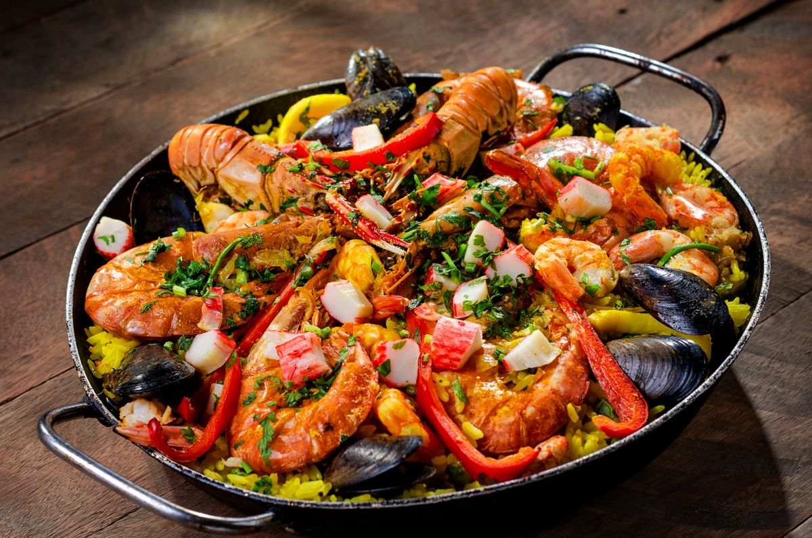
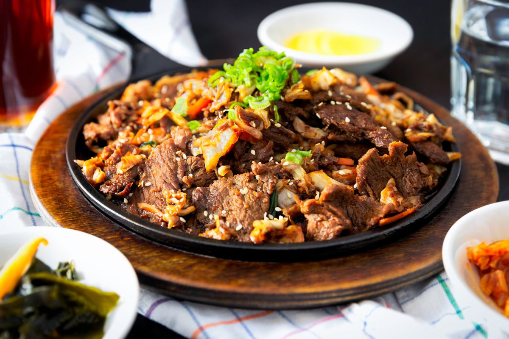
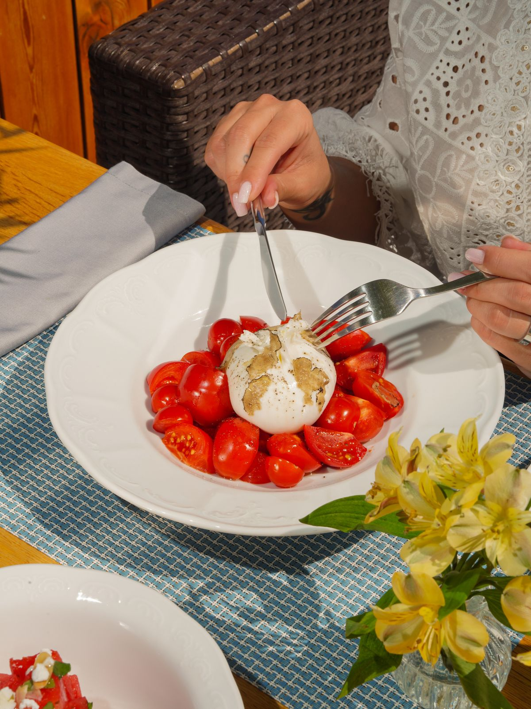
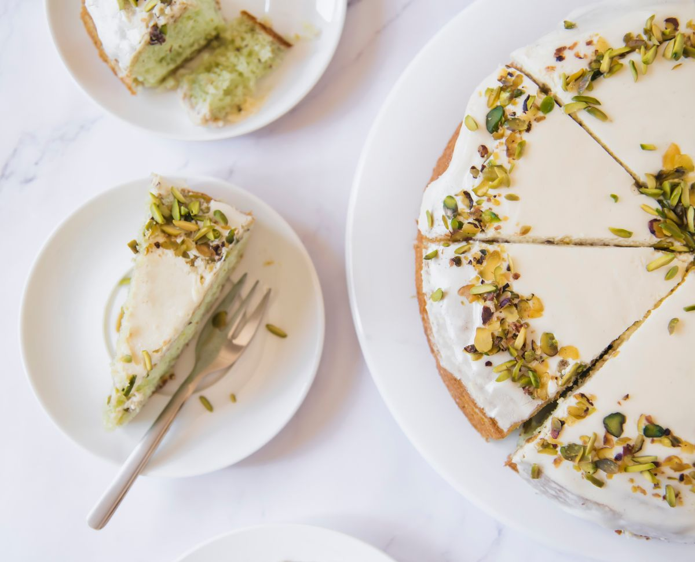
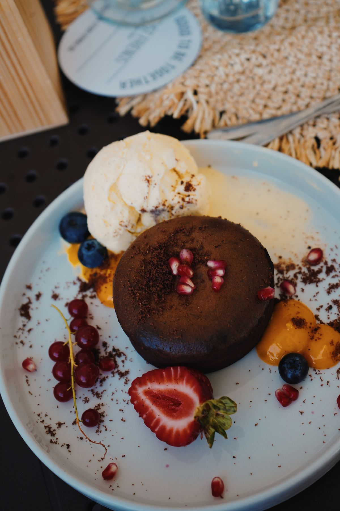
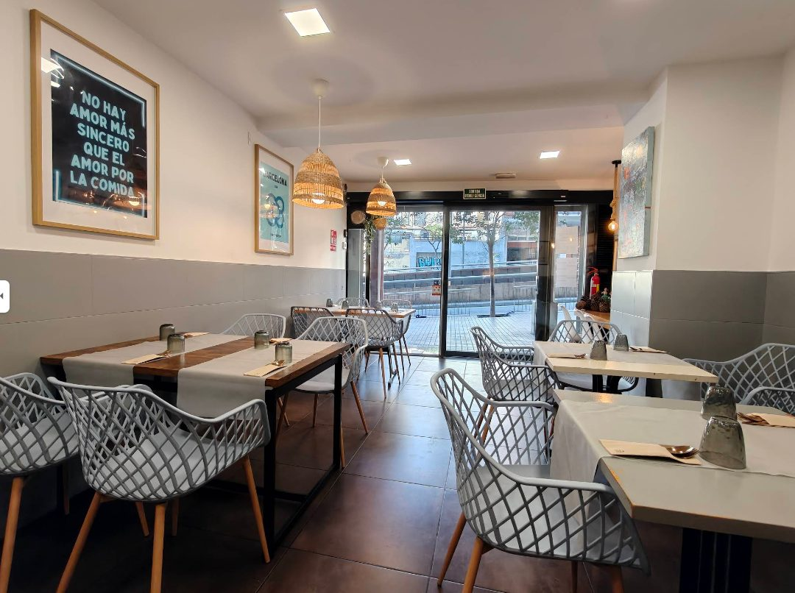

Arroz de secreto
El plato del que más se habla: caldo corto, carne en su punto y ese sabor que se queda. Se pide por raciones, para compartir en el centro de la mesa.
Gràcia, Barcelona — a 4 minutos del Park Güell
Un local pequeño, llevado por su gente, donde el recetario de siempre se sirve sin artificios. Arroces, cannelloni de la abuela y postres que se hacen cada día.
La casa
Sense Fons abrió sus puertas como el tipo de sitio al que uno vuelve: mesas de madera, luz de mimbre y una cocina que no necesita impresionar porque ya convence. Al pie del Park Güell, es parada obligada para quien sube al parque y descubrimiento feliz para quien vive en el barrio.
La casa cuida cada plato como si fuera el único que sirve esa noche. Raciones generosas, producto de mercado y una carta corta que cambia lo justo para mantenerse honesta.
Lo más pedido

El plato del que más se habla: caldo corto, carne en su punto y ese sabor que se queda. Se pide por raciones, para compartir en el centro de la mesa.

Sellado por fuera, crudo por dentro, cortado fino. Un guiño oriental servido con la naturalidad de una casa catalana.

Cremosa, fresca y con un pesto de hummus que nadie espera y todos recuerdan. Entrante ligero, pensado para abrir apetito sin llenar.

Cremosa, con el crujiente del pistacho triturado por encima. El cierre perfecto de una comida sin prisas.

Caliente, líquido por dentro, sin trucos. También hay chocolate de sobrasada para quien busca algo más atrevido.
La carta cambia según mercado. Cannelloni de pollo con bechamel de queso de cabra también habitual — pregunta por los platos del día.
La sala
Pocas mesas, mucha cercanía. Mesas de madera maciza, luz cálida de mimbre y un ambiente que invita a quedarse. Es un espacio íntimo — y precisamente por eso, recomendamos reservar con antelación, sobre todo en fin de semana.
Reservar mesa
Lo que dicen
«Arroz de secreto sabrosísimo y con la carne en su punto. Raciones muy generosas.»
Reseña en Google
«Cocina honesta y bien hecha, con producto de verdad. Se nota que cocinan como en casa.»
Reseña en Tripadvisor
«Un sitio pequeño y acogedor, perfecto para escapar del ajetreo del centro. Reserva antes de subir al parque.»
Reseña de visitante
Visítanos